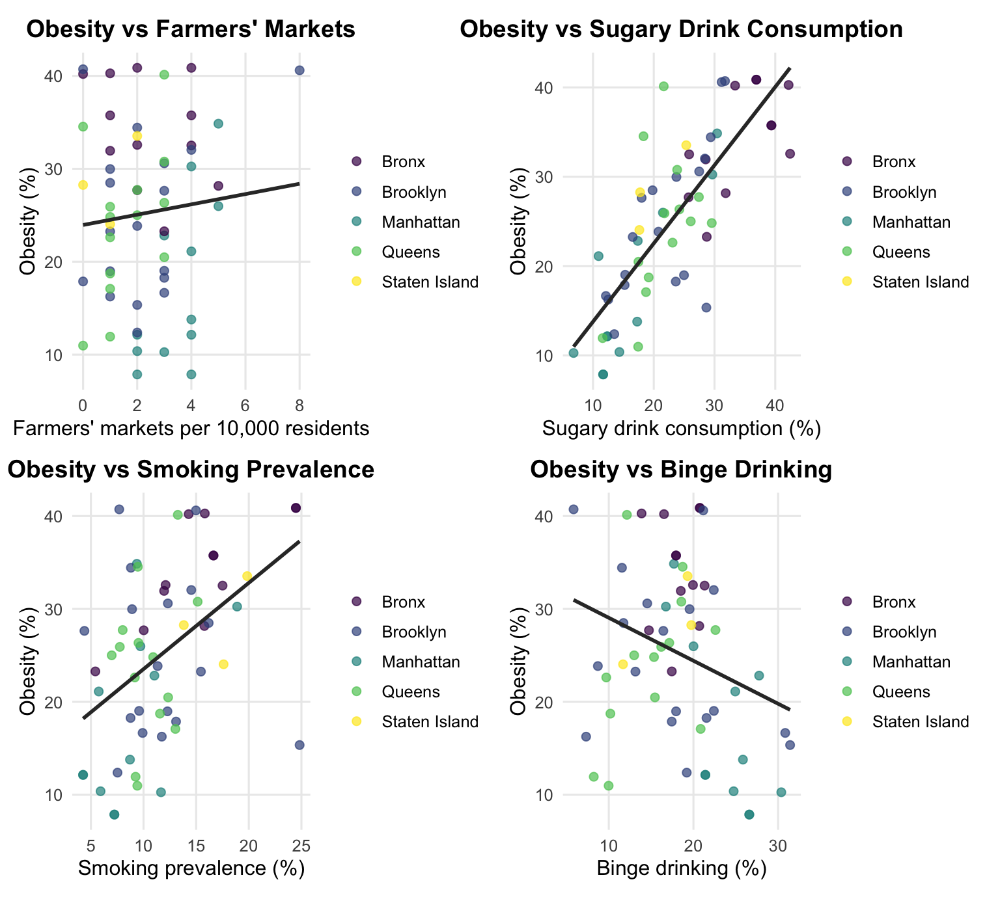
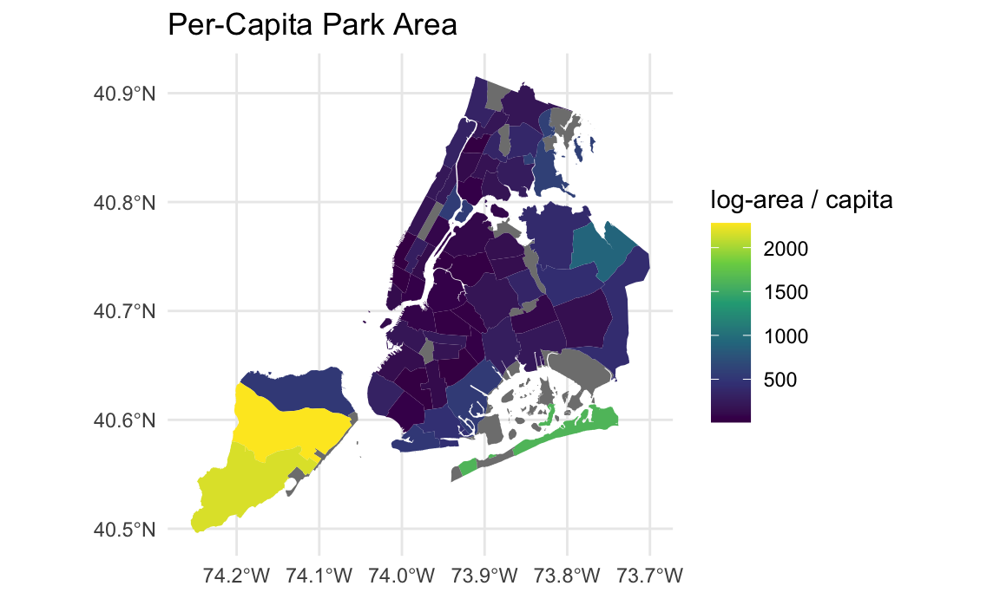
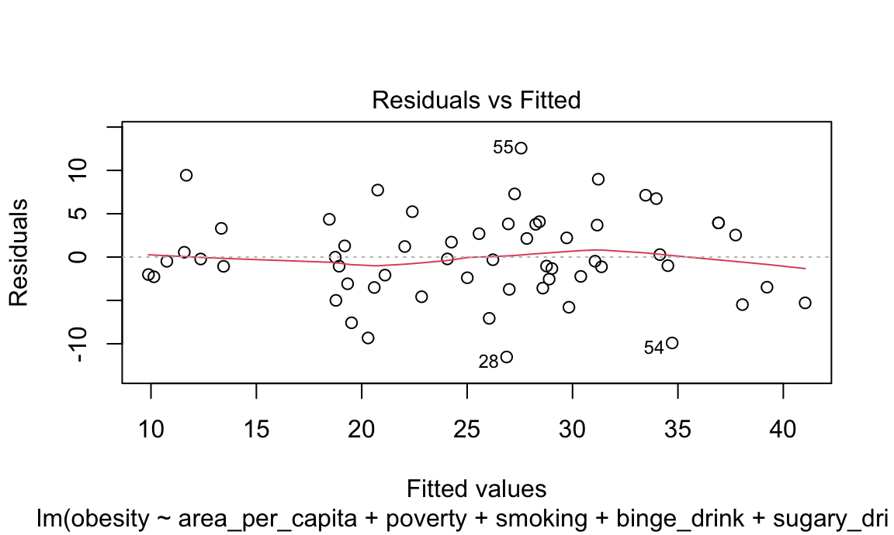
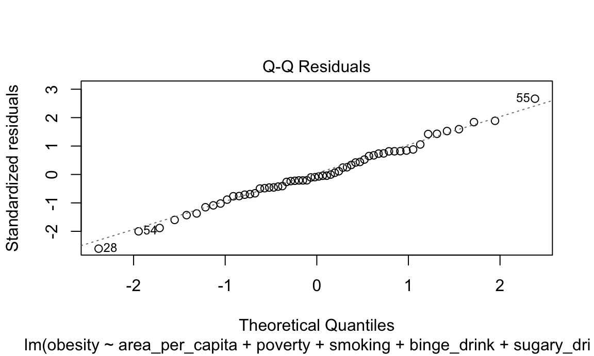
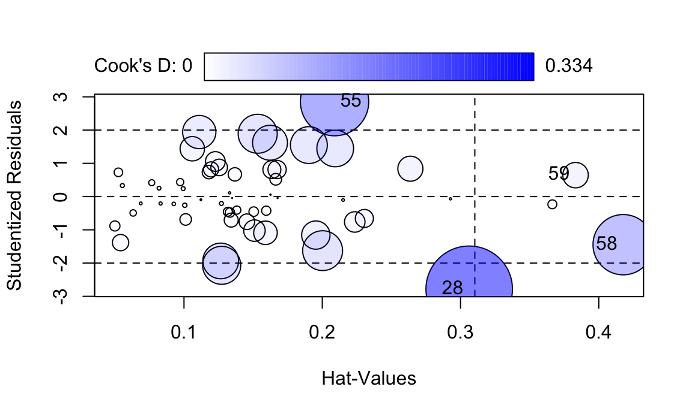
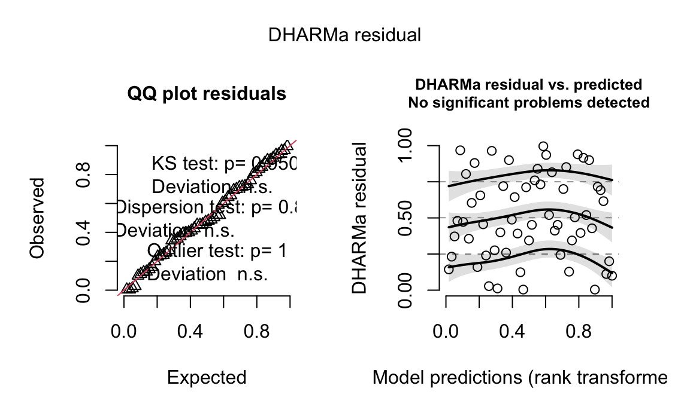
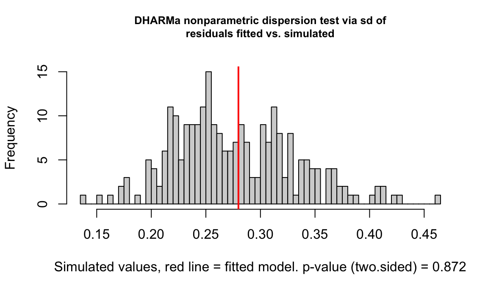

Obesity Analysis
Data Cleaning and Exploratory Analysis
In this part, we begin by integrating the NYC Parks dataset with the Community Health Profiles (CHP) dataset.
df_parks <- read.csv("data/Parks_Properties_20251104.csv", colClasses = "character", encoding = "UTF-8") |>
select(ACQUISITIONDATE: multipolygon) |>
clean_names()
df_chp <- read_excel("data/2022-chp-pud.xlsx", sheet = "CHP_all_data", skip = 1) |>
clean_names()
df_prem_death <- read_excel("data/2022-chp-pud.xlsx", sheet = "Cause_of_premature_death") |>
clean_names()
df_cancer <- read_excel("data/2022-chp-pud.xlsx", sheet = "Cancer_data_ranked") |>
clean_names()Because the two sources might use different formats for Community District (CD) identifiers, the first step is to standardize these administrative codes. To ensure compatibility, all CD identifiers were converted to character format, and the Parks identifiers were mapped to the CD structure used in the CHP dataset. After this harmonization, the Parks data could be reliably merged with the CHP dataset.
An additional and important issue concerns parks that span multiple Community Districts. Directly assigning each park’s full acreage to every associated CD would result in double-counting and systematic inflation of park exposure at the community level. To address this, we applied an even allocation procedure. For any park that overlaps n districts, its total acreage A was divided equally among the n districts, such that each district received A/n. Park counts were treated analogously by assigning each overlapping district a fractional count of 1/n. The allocated acreage and fractional counts were then summed within each district. This approach ensures that park areas and park counts are not duplicated across districts, while preserving the correct total acreage and total number of parks across the city. The resulting district-level indicators therefore reflect a non-redundant and statistically coherent measure of park exposure.
df_parks <-
df_parks |>
rename(id = communityboard)
df_parks_community <-
df_parks |>
mutate(
acres = as.numeric(acres),
id = as.factor(id)
) |>
group_by(id) |>
summarise(
sum_acres = sum(acres, na.rm = TRUE),
mean_acres = mean(acres, na.rm = TRUE),
n_parks = n()
) |>
filter(sum_acres > 0) |> # only use observations with positive areas
mutate(
id = as.character(id),
n_split = lengths(strsplit(id, ","))
) |>
separate_rows(id, sep = ",") |>
mutate(
id = trimws(id),
sum_acres_adj = sum_acres / n_split,
n_parks_adj = n_parks / n_split
) |>
group_by(id) |>
summarise(
sum_acres = sum(sum_acres_adj, na.rm = TRUE),
n_parks = sum(n_parks_adj, na.rm = TRUE),
mean_acres = sum_acres / n_parks
) |>
filter(sum_acres != "Inf")
# df_parks_borough <-
# df_parks |>
# filter(
# borough == c("B", "M", "Q", "R", "X")
# ) |>
# mutate(
# borough = as.factor(borough),
# acres = as.numeric(acres)
# ) |>
# group_by(borough) |>
# summarise(
# sum_acres = sum(acres, na.rm = TRUE),
# mean_acres = mean(acres, na.rm = TRUE),
# n_parks = n()
# ) |>
# rename(id = borough)
#
# df_parks_all_dist <-
# bind_rows(df_parks_borough, df_parks_community)# df_parks_split <-
# df_parks_all_dist |>
# mutate(
# id = as.character(id),
# n_split = lengths(strsplit(id, ","))
# ) |>
# separate_rows(id, sep = ",") |>
# mutate(
# id = trimws(id),
# sum_acres_adj = sum_acres / n_split,
# n_parks_adj = n_parks / n_split
# ) |>
# group_by(id) |>
# summarise(
# sum_acres = sum(sum_acres_adj, na.rm = TRUE),
# n_parks = sum(n_parks_adj, na.rm = TRUE),
# mean_acres = sum_acres / n_parks
# )# get rid of reliability index
df_chp_clean <- df_chp |>
select(-contains("95cl"), -contains("nyc_comparison"), -contains("reliability_note")) |>
filter(id != c(0, 1, 2, 3, 4, 5))
# mutate(
# id = recode(as.character(id),
# "1" = "M",
# "2" = "X",
# "3" = "B",
# "4" = "Q",
# "5" = "R"),
#
# )
df_chp_clean <- df_chp_clean |>
mutate(uninsured = as.numeric(uninsured),
uninsured = round(uninsured, 2))As an initial step in the exploratory data analysis, we organized the
variables in the Community Health Profiles (CHP) dataset into meaningful
thematic categories. To formalize this structure, we created a variable
map (var_map) that assigns each CHP variable to a
conceptual domain based on its substantive interpretation. The major
domains include basic demographic characteristics, educational
attainment, economic conditions, community safety, dietary and
health-related behaviors, and health insurance coverage. This
categorization provides a systematic overview of the dataset and
clarifies the role each variable plays in describing community-level
conditions across New York City.
# create a variable map for df_chp_clean
var_map <- tribble(
~variable, ~category,
"id", "geo",
"borough", "geo",
"name", "geo",
"overall_pop", "population",
"race_white", "demographic_race",
"race_black", "demographic_race",
"race_latino", "demographic_race",
"race_asian", "demographic_race",
"race_other", "demographic_race",
"age0to17", "demographic_age",
"age18to24", "demographic_age",
"age25to44", "demographic_age",
"age45to64", "demographic_age",
"age65plus", "demographic_age",
"born_outside_us", "demographic_migration",
"ltd_eng_prof", "demographic_language",
"edu_did_not_complete_hs", "SES_education",
"edu_hs_grad_some_college", "SES_education",
"edu_college_degree_and_higher","SES_education",
"poverty", "SES_economic",
"unemployment", "SES_economic",
"rent_burden", "SES_economic",
"school_absent", "education_outcome",
"on_time_hs_grad", "education_outcome",
"homes_ac", "housing_environment",
"homes_no_defects", "housing_environment",
"air_pollution", "physical_environment",
"ratio_bodega_supermarket", "food_environment",
"farmers_markets", "food_environment",
"helpful_neighbor", "social_environment",
"assault_hosp", "safety_violence",
"jail_incarceration", "safety_justice",
"pedestrian_hosp", "safety_transport",
"physical_activity", "behavior",
"fruit_veg", "behavior",
"sugary_drink", "behavior",
"smoking", "behavior",
"binge_drink", "behavior",
"uninsured", "access_care",
"unmet_med_care", "access_care",
"hpv_vaccination_all", "preventive_care",
"flu_vaccination", "preventive_care",
"preterm_births", "maternal_child",
"teen_births", "maternal_child",
"child_obesity", "maternal_child",
"infant_mort", "maternal_child",
"obesity", "chronic_disease",
"diabetes", "chronic_disease",
"hypertension", "chronic_disease",
"hiv_diagnoses", "infectious_disease",
"hep_c_reports", "infectious_disease",
"avoidable_child_hosp", "hospitalization",
"avoidable_adult_hosp", "hospitalization",
"falls_hosp", "injury_hospitalization",
"psych_hosp", "mental_health",
"avertable_death", "mortality",
"premature_mort_rate", "mortality",
"premature_mort_number", "mortality",
"life_expectancy", "global_health",
"self_rep_health", "global_health"
)From each category, we selected one or more representative variables to be used in downstream modeling. The selection was guided by theoretical relevance, interpretability, data completeness, and the ability of each variable to capture important variation across community districts. Specifically, the variables chosen include indicators related to demographics (e.g., race and age), education (e.g., proportion of residents with a bachelor’s degree), economic conditions (e.g., poverty rate and unemployment), community safety (e.g., assault-related hospitalizations, pedestrian injury hospitalizations), dietary and health behaviors (e.g., sugary drink consumption, fruit and vegetable intake, smoking and drinking), and access to healthcare (e.g., health insurance coverage). These variables were reviewed, cleaned, and standardized when necessary to ensure consistency and suitability for statistical modeling.
Following the categorization and variable selection, we merged the cleaned CHP dataset with the processed Parks dataset. This integration enables an examination of how park availability (measured through district-level park area and park counts) relates to community socioeconomic conditions, safety indicators, health behaviors, and population health outcomes such as obesity. The merged analytic dataset forms the foundation for the visualizations and descriptive analyses presented in the remainder of the EDA section.
# demographic data
var_demo <- var_map |>
filter(category %in% c("geo", "population", "demographic_race", "demographic_age","demographic_migration", "demographic_language")) |>
pull(variable)
df_demographic <-
df_chp_clean |>
select(all_of(var_demo)) |>
mutate(
age0to24 = age0to17 + age18to24,
age25to64 = age25to44 + age45to64,
race_others = race_asian + race_other
) |>
select(-race_asian, -race_other, -age0to17, -age18to24, -age25to44, -age45to64) |>
relocate(
c(age0to24, age25to64), .before = age65plus
) |>
relocate(race_others, .after = race_latino)
# education condition
var_edu <- var_map |>
filter(category %in% c("geo", "SES_education")) |>
pull(variable)
df_education <- df_chp_clean |>
select(all_of(var_edu)) |>
mutate(edu_no_college_degree = edu_did_not_complete_hs + edu_hs_grad_some_college) |>
select(-edu_did_not_complete_hs, -edu_hs_grad_some_college)
# economic condition
var_eco <- var_map |>
filter(category %in% c("geo","SES_economic"))|>
pull(variable)
df_economy <- df_chp_clean |>
select(all_of(var_eco)) |>
select(-rent_burden)
# food condition
var_food <- var_map |>
filter(category %in% c("geo", "food_environment", "behavior")) |>
pull(variable)
df_food <- df_chp_clean |>
select(all_of(var_food))|>
select(-ratio_bodega_supermarket, -physical_activity, -smoking, -binge_drink)
# smoking and drinking
df_smoke_drink <- df_chp_clean |>
select(id, borough, name, smoking, binge_drink)
# activity
df_activity <- df_chp_clean |>
select(id, borough, name, physical_activity)
# safety condition
var_safety <- var_map |>
filter(category %in% c("geo", "safety_violence", "social_environment", "safety_transport")) |>
pull(variable)
df_safety <- df_chp_clean |>
select(all_of(var_safety))
# medical availability
df_med_avail <- df_chp_clean |>
select(id, borough, name, uninsured)
# health conditions
df_health <- df_chp_clean |>
select(id, obesity, life_expectancy)
dfs <- list(df_demographic, df_health, df_parks_community, df_education, df_economy, df_food, df_smoke_drink, df_activity, df_safety, df_med_avail)
# get a final dataframe for analysis
df_analysis <- reduce(dfs, left_join, by = "id") |>
select(-contains("borough.x.x"), -contains("name.x.x"), -contains("borough.y"), -contains("name.y")) |>
rename(
borough = borough.x,
name = name.x
) |>
filter(overall_pop != 0) |>
mutate(
area_per_capita = (sum_acres / overall_pop) * 100000,
log_area = log(area_per_capita + 1)) To explore the relationship between obesity and potential community-level determinants, we conducted a series of visual analyses in which obesity rate was treated as the outcome and park characteristics, along with selected CHP variables, were treated as predictors. For each predictor, we generated plots to assess general patterns, identify potential nonlinearities, and detect outliers.
summary(df_analysis)## id borough name overall_pop
## Length:59 Length:59 Length:59 Min. : 55096
## Class :character Class :character Class :character 1st Qu.:110992
## Mode :character Mode :character Mode :character Median :144859
## Mean :143458
## 3rd Qu.:178309
## Max. :265650
##
## race_white race_black race_latino race_others
## Min. : 0.942 Min. : 0.660 Min. : 6.669 Min. : 1.471
## 1st Qu.: 8.523 1st Qu.: 3.659 1st Qu.:12.876 1st Qu.: 7.019
## Median :25.185 Median :12.481 Median :22.468 Median :10.972
## Mean :31.113 Mean :22.573 Mean :30.247 Mean :16.067
## 3rd Qu.:54.306 3rd Qu.:30.701 3rd Qu.:44.953 3rd Qu.:20.788
## Max. :81.072 Max. :87.757 Max. :77.135 Max. :56.085
##
## age0to24 age25to64 age65plus born_outside_us
## Min. :16.09 Min. :44.86 Min. : 9.112 Min. :16.00
## 1st Qu.:25.02 1st Qu.:52.73 1st Qu.:13.354 1st Qu.:27.00
## Median :29.00 Median :54.42 Median :15.366 Median :34.00
## Mean :28.80 Mean :55.22 Mean :15.978 Mean :35.92
## 3rd Qu.:32.45 3rd Qu.:56.68 3rd Qu.:18.676 3rd Qu.:43.50
## Max. :43.41 Max. :67.89 Max. :25.290 Max. :63.00
##
## ltd_eng_prof obesity life_expectancy sum_acres
## Min. : 5.00 Min. : 7.865 Min. :75.98 Min. : 14.99
## 1st Qu.:10.50 1st Qu.:18.070 1st Qu.:80.67 1st Qu.: 138.86
## Median :22.00 Median :25.914 Median :82.56 Median : 253.33
## Mean :21.97 Mean :25.231 Mean :82.57 Mean : 450.30
## 3rd Qu.:29.00 3rd Qu.:32.273 3rd Qu.:84.90 3rd Qu.: 477.96
## Max. :53.00 Max. :40.870 Max. :87.74 Max. :3473.98
##
## n_parks mean_acres edu_college_degree_and_higher
## Min. : 9.167 Min. : 0.6856 Min. :18.00
## 1st Qu.:21.708 1st Qu.: 3.5769 1st Qu.:32.50
## Median :32.000 Median : 9.8681 Median :40.00
## Mean :34.695 Mean :13.7477 Mean :43.83
## 3rd Qu.:44.500 3rd Qu.:19.7653 3rd Qu.:49.00
## Max. :83.000 Max. :85.7410 Max. :85.00
##
## edu_no_college_degree poverty unemployment farmers_markets
## Min. :15.00 Min. : 6.10 Min. : 3.000 Min. :0.000
## 1st Qu.:51.00 1st Qu.:14.10 1st Qu.: 5.000 1st Qu.:1.000
## Median :60.00 Median :19.20 Median : 6.000 Median :2.000
## Mean :56.24 Mean :19.24 Mean : 6.661 Mean :2.305
## 3rd Qu.:67.50 3rd Qu.:23.35 3rd Qu.: 8.000 3rd Qu.:3.000
## Max. :82.00 Max. :35.40 Max. :13.000 Max. :8.000
##
## fruit_veg sugary_drink smoking binge_drink
## Min. :76.03 Min. : 6.796 Min. : 4.256 Min. : 5.838
## 1st Qu.:86.74 1st Qu.:17.318 1st Qu.: 8.784 1st Qu.:14.643
## Median :89.27 Median :23.089 Median :11.338 Median :18.505
## Mean :89.17 Mean :23.074 Mean :11.838 Mean :18.247
## 3rd Qu.:92.79 3rd Qu.:28.691 3rd Qu.:14.756 3rd Qu.:21.360
## Max. :98.74 Max. :42.444 Max. :24.827 Max. :31.417
##
## physical_activity helpful_neighbor assault_hosp pedestrian_hosp
## Min. :59.46 Min. :65.62 Min. : 8.00 Min. : 9.00
## 1st Qu.:69.84 1st Qu.:73.27 1st Qu.: 25.00 1st Qu.:17.00
## Median :73.24 Median :77.39 Median : 42.00 Median :21.00
## Mean :73.76 Mean :76.72 Mean : 60.97 Mean :22.22
## 3rd Qu.:76.35 3rd Qu.:81.35 3rd Qu.: 83.50 3rd Qu.:26.00
## Max. :86.98 Max. :85.79 Max. :186.00 Max. :47.00
##
## uninsured area_per_capita log_area
## Min. : 3.430 Min. : 9.932 Min. :2.392
## 1st Qu.: 8.975 1st Qu.: 92.026 1st Qu.:4.532
## Median :12.190 Median : 189.513 Median :5.250
## Mean :13.137 Mean : 315.987 Mean :5.171
## 3rd Qu.:16.795 3rd Qu.: 347.163 3rd Qu.:5.853
## Max. :32.830 Max. :2278.411 Max. :7.732
## NA's :1Visualizations of obesity against park-related measures (total park area, per-capita park area, and park counts) revealed whether community access to green spaces is associated with variation in obesity rates across districts.
# df_analysis |>
# ggplot(aes(x = log_area, y = obesity)) +
# geom_point(color = "#6a5acd")
#
# lm1 <- lm(obesity ~ log_area, data = df_analysis)
# plot(lm1)
# summary(lm1)There are no obvious relationships between log_area and obesity.
plot_ly(
df_analysis,
x = ~log_area,
y = ~obesity,
type = 'scatter',
mode = 'markers',
color = ~borough,
text = ~paste("Community: ", name,
"<br>Borough: ", borough,
"<br>Log Area: ", log_area,
"<br>Obesity: ", obesity, "%")
) |>
layout(title = "Obesity vs Park Access",
xaxis = list(title = "Log Area"),
yaxis = list(title = "Obesity"))Similar scatter plots were produced for socioeconomic indicators (e.g., poverty rate, educational attainment), safety measures (e.g., assault-related hospitalizations), and health behavior variables (e.g., sugary drink consumption, fruit and vegetable intake). These plots help illustrate which predictors show strong monotonic relationships with obesity and which demonstrate weaker or more complex patterns.
obesity ~ poverty
# ggplot(df_analysis, aes(obesity)) + geom_histogram()
plot_ly(
df_analysis,
x = ~poverty,
y = ~obesity,
type = 'scatter', mode = 'markers',
color = ~borough,
text = ~paste("Community: ", name,
"<br>Borough: ", borough,
"<br>Poverty Rate: ", poverty, "%",
"<br>Obesity: ", obesity, "%")) |>
layout(
title = "Obesity vs Poverty",
xaxis = list(title = "Poverty Rate"),
yaxis = list(title = "Obesity Rate"))obesity ~ borough
# ggplot(df_analysis, aes(borough, obesity)) + geom_boxplot()
df_analysis |>
filter(id != 0) |>
plot_ly(
x = ~borough,
y = ~obesity,
type = 'box',
fillcolor = ~borough,
text= ~paste("<br>Borough: ", borough)
) |>
layout(
title = "Obesity vs Borough",
xaxis = list(title = "Borough"),
yaxis = list(title = "Obesity")
)borough is a confounding factor.
obesity ~ food
base_theme <- theme_minimal(base_size = 12) +
theme(
plot.title = element_text(face = "bold", size = 14, hjust = 0.5),
legend.position = "right",
legend.title = element_blank(),
panel.grid.minor = element_blank()
)
# 1. Obesity vs Farmers' Market
p_farm <- ggplot(df_analysis, aes(x = farmers_markets, y = obesity, color = borough)) +
geom_point(alpha = 0.7, size = 2) +
geom_smooth(method = "lm", se = FALSE, color = "gray20", linewidth = 1) +
labs(title = "Obesity vs Farmers' Markets",
x = "Farmers' markets per 10,000 residents",
y = "Obesity (%)") +
base_theme
# 2. Obesity vs Sugary Drink
p_sugary <- ggplot(df_analysis, aes(x = sugary_drink, y = obesity, color = borough)) +
geom_point(alpha = 0.7, size = 2) +
geom_smooth(method = "lm", se = FALSE, color = "gray20", linewidth = 1) +
labs(title = "Obesity vs Sugary Drink Consumption",
x = "Sugary drink consumption (%)",
y = "Obesity (%)") +
base_theme
# 3. Obesity vs Smoking
p_smoke <- ggplot(df_analysis, aes(x = smoking, y = obesity, color = borough)) +
geom_point(alpha = 0.7, size = 2) +
geom_smooth(method = "lm", se = FALSE, color = "gray20", linewidth = 1) +
labs(title = "Obesity vs Smoking Prevalence",
x = "Smoking prevalence (%)",
y = "Obesity (%)") +
base_theme
# 4. Obesity vs Binge Drinking
p_binge <- ggplot(df_analysis, aes(x = binge_drink, y = obesity, color = borough)) +
geom_point(alpha = 0.7, size = 2) +
geom_smooth(method = "lm", se = FALSE, color = "gray20", linewidth = 1) +
labs(title = "Obesity vs Binge Drinking",
x = "Binge drinking (%)",
y = "Obesity (%)") +
base_theme
# ---- Combine 4 plots: shared legend automatically ----
combined_plot <- (p_farm + p_sugary) / (p_smoke + p_binge)
combined_plot
obesity ~ education
# ggplot(df_analysis, aes(edu_college_degree_and_higher, obesity)) +
# geom_point() + geom_smooth(method="lm")
plot_ly(
df_analysis,
x = ~edu_college_degree_and_higher,
y = ~obesity,
mode = "markers",
type = "scatter",
color = ~borough,
text= ~paste("Community: ", name,
"<br>Borough: ", borough,
"<br>Obesity: ", obesity, "%",
"<br>High Education Rate: ", edu_college_degree_and_higher, "%")
) |>
layout(
title = "Obesity vs Education",
xaxis = list(title = "High Education Rate"),
yaxis = list(title = "Obesity")
)obesity ~ safety
fig_bubble <- plot_ly(
df_analysis,
x = ~assault_hosp,
y = ~pedestrian_hosp,
size = ~obesity,
color = ~borough,
colors = "Set2",
type = "scatter",
mode = "markers",
marker = list(
sizemode = "area",
sizeref = 2 * max(df_analysis$obesity) / 60^2,
opacity = 0.7
),
text = ~paste(
"CD:", id,
"<br>Name:", name,
"<br>Assault hosp:", assault_hosp,
"<br>Pedestrian hosp:", pedestrian_hosp,
"<br>Obesity:", round(obesity,1), "%"
),
hoverinfo = "text"
) |>
layout(
title = "Safety Indicators and Obesity (Bubble Plot)",
xaxis = list(title = "Assault-related hospitalizations"),
yaxis = list(title = "Pedestrian injury hospitalizations")
)
fig_bubbleMaps
nycd <- st_read("data/nycd_25d/nycd.shp") |>
mutate(BoroCD = as.character(BoroCD))## Reading layer `nycd' from data source
## `/Users/mariaserafini/Desktop/Grad School/Courses/Data Science I/4. R Projects/P8105-Final-Project/data/nycd_25d/nycd.shp'
## using driver `ESRI Shapefile'
## Simple feature collection with 71 features and 3 fields
## Geometry type: MULTIPOLYGON
## Dimension: XY
## Bounding box: xmin: 913175.1 ymin: 120128.4 xmax: 1067383 ymax: 272844.3
## Projected CRS: NAD83 / New York Long Island (ftUS)df_map <- nycd %>%
left_join(df_analysis, by = c("BoroCD" = "id")) |>
st_transform(4326)
# make_cd_map <- function(sf_data, z_var, z_title, colorscale = "Viridis") {
# plot_ly(
# sf_data,
# type = "choroplethmapbox",
# geojson = sf_data,
# locations = ~BoroCD,
# z = sf_data[[z_var]],
# colorscale = colorscale,
# marker = list(line = list(width = 0.2, color = "white")),
# text = ~paste0(
# "CD: ", BoroCD,
# "<br>Name: ", if ("Name" %in% names(sf_data)) Name else "",
# "<br>", z_title, ": ", round(sf_data[[z_var]], 2)
# ),
# hoverinfo = "text"
# ) %>%
# layout(
# mapbox = list(
# style = "carto-positron",
# zoom = 9.5,
# center = list(lon = -74.0, lat = 40.7)
# ),
# margin = list(l = 0, r = 0, t = 40, b = 0),
# title = paste("NYC Community District", z_title)
# )
# }
# fig_obesity <- make_cd_map(
# sf_data = df_map,
# z_var = "obesity",
# z_title = "Obesity (%)",
# colorscale = "Reds"
# )
# fig_obesity
p_obesity <-
ggplot(df_map) +
geom_sf(aes(fill = obesity), color = NA) +
scale_fill_viridis_c(option = "A") +
labs(
title = "NYC Community District Obesity (%)",
fill = "Obesity (%)"
) +
theme_minimal()
p_obesity
p_poverty <- ggplot(df_map) +
geom_sf(aes(fill = poverty), color = NA) +
scale_fill_viridis_c(option = "Blues", direction = 1) +
labs(
title = "Poverty Rate by Community District",
fill = "Poverty (%)"
) +
theme_minimal()
p_poverty
p_parks <- ggplot(df_map) +
geom_sf(aes(fill = area_per_capita), color = NA) +
scale_fill_viridis_c(option = "Greens", direction = 1) +
labs(
title = "Per-Capita Park Area",
fill = "log-area / capita"
) +
theme_minimal()
p_parks
# fig <- plot_ly(df_map,
# type = "choroplethmapbox",
# geojson = df_map,
# locations = ~BoroCD,
# z = ~obesity,
# colorscale = "Reds",
# text = ~paste("CD:", BoroCD,
# "<br>Obesity:", round(obesity,1),"%"),
# hoverinfo = "text") %>%
# layout(mapbox = list(style = "carto-positron",
# zoom = 9.5,
# center = list(lon = -74, lat = 40.7)),
# title = "NYC Community District Obesity Rate")
#
# figThe primary purpose of these visual analyses is not only descriptive but also diagnostic. The figures highlight variables with relevant associations that merit inclusion in the regression modeling stage and help identify potential issues such as extreme values or nonlinear effects. Overall, the EDA suggests that certain socioeconomic and behavioral variables show clearer relationships with obesity than park-related measures alone, underscoring the importance of including multiple domains of community characteristics in subsequent modeling.
Multiple Linear Regression (MLR)
Fitting the MLR
We first fitted a multiple linear regression (MLR) model to evaluate the associations between obesity and a set of community-level predictors. MLR was chosen because it allows us to examine the effect of park access while simultaneously accounting for a range of socioeconomic, behavioral, safety, and demographic factors that may confound the relationship between green space and obesity. Compared with simple bivariate analyses, the multivariable framework provides a clearer assessment of the independent contribution of each predictor.
The predictors included in the model were selected based on both theoretical relevance and the empirical patterns observed during the EDA stage. Specifically, we incorporated variables representing:
• Park access (area_per_capita);
• Socioeconomic conditions (poverty rate);
• Health behaviors (smoking, sugary drink consumption, binge drinking);
• Community safety (pedestrian injury hospitalizations);
• Educational attainment (proportion with a college degree or higher);
• Access to care (uninsured rate).
These variables capture distinct dimensions of community context and are commonly identified in the literature as determinants of obesity or related health outcomes. They also demonstrated meaningful variation and interpretable associations with obesity in preliminary visual analyses.
We estimated the following model:
obesity ~ area_per_capita + poverty + smoking + binge_drink + sugary_drink + pedestrian_hosp + edu_college_degree_and_higher + uninsured
df_analysis <-
df_analysis |>
mutate(
obesity = as.numeric(obesity),
poverty = as.numeric(poverty),
smoking = as.numeric(smoking),
binge_drink = as.numeric(binge_drink),
sugary_drink = as.numeric(sugary_drink),
pedestrian_hosp = as.numeric(pedestrian_hosp),
uninsured = as.numeric(uninsured)
)
model_mlr <- lm(
obesity ~ area_per_capita + poverty + smoking + binge_drink +
sugary_drink + pedestrian_hosp + edu_college_degree_and_higher + uninsured,
data = df_analysis
)
summary(model_mlr)##
## Call:
## lm(formula = obesity ~ area_per_capita + poverty + smoking +
## binge_drink + sugary_drink + pedestrian_hosp + edu_college_degree_and_higher +
## uninsured, data = df_analysis)
##
## Residuals:
## Min 1Q Median 3Q Max
## -11.5243 -2.9448 -0.3908 3.5950 12.5679
##
## Coefficients:
## Estimate Std. Error t value Pr(>|t|)
## (Intercept) 2.732e+01 8.910e+00 3.067 0.00352 **
## area_per_capita 5.923e-06 2.117e-03 0.003 0.99778
## poverty -4.557e-01 2.241e-01 -2.033 0.04744 *
## smoking 5.258e-02 2.117e-01 0.248 0.80488
## binge_drink -7.716e-02 1.466e-01 -0.526 0.60108
## sugary_drink 5.788e-01 1.334e-01 4.340 7.11e-05 ***
## pedestrian_hosp 2.586e-01 1.314e-01 1.967 0.05480 .
## edu_college_degree_and_higher -2.496e-01 9.557e-02 -2.612 0.01192 *
## uninsured -4.922e-02 1.526e-01 -0.323 0.74833
## ---
## Signif. codes: 0 '***' 0.001 '**' 0.01 '*' 0.05 '.' 0.1 ' ' 1
##
## Residual standard error: 5.3 on 49 degrees of freedom
## (1 observation deleted due to missingness)
## Multiple R-squared: 0.7243, Adjusted R-squared: 0.6793
## F-statistic: 16.09 on 8 and 49 DF, p-value: 2.398e-11In this model, poverty, sugary drink consumption, and educational attainment were statistically significant predictors. The coefficient for pedestrian hospitalizations was marginally above the conventional significance threshold and can be considered borderline significant. Together, these results highlight the importance of socioeconomic and behavioral factors in explaining variation in obesity across NYC community districts.
MLR Diagnostic
To evaluate whether the assumptions of the multiple linear regression model were satisfied, we conducted a series of diagnostic checks. Residual plots and Q–Q plots were first examined to assess linearity, homoscedasticity, and normality of residuals. The diagnostic figures showed no major deviations from these assumptions, indicating that the linear model provides an adequate fit for the data and that the residual distribution is approximately normal.
Linear relationship and equal variances.
plot(model_mlr, which = 1)
Heavy tail comparaed with normal distribution.
plot(model_mlr, which = 2)
We examined influential observations using the
influencePlot() function. The plot identified approximately
three to four community districts that may exert disproportionate
influence on the regression estimates. These points may represent
meaningful outliers or communities with unique characteristics, and
further investigation may be warranted to determine whether they reflect
data quality issues, structural differences, or true population
heterogeneity. Nonetheless, the overall model appears robust, and no
influential point was severe enough to undermine the general
conclusions.
There are some outliers.
influencePlot(model_mlr)
## StudRes Hat CookD
## 28 -2.7847421 0.3062689 0.33431290
## 55 2.8537860 0.2088937 0.20853684
## 58 -1.4467720 0.4176663 0.16316721
## 59 0.6445915 0.3831879 0.02902667We then assessed multicollinearity among the predictors using
Variance Inflation Factors (VIFs). Most predictors had VIF values below
5, suggesting limited collinearity. However, the variables
poverty and edu_college_degree_and_higher
yielded VIF values between 5 and 10, indicating moderate
multicollinearity. This pattern is expected, as socioeconomic status and
educational attainment are conceptually and empirically correlated.
While these levels of VIF do not invalidate the model, they suggest that
the coefficients for these variables should be interpreted with some
caution.
No Obvious Multicollinearity.
vif(model_mlr)## area_per_capita poverty
## 1.790198 5.036061
## smoking binge_drink
## 2.065023 1.469724
## sugary_drink pedestrian_hosp
## 2.637359 2.157010
## edu_college_degree_and_higher uninsured
## 6.013029 1.981866Theoretically, poverty and sugary_drink
should have strong linear relationships, however in this dataset, they
don’t. Besides, the effect of poverty on obesity in this dataset is also
not significant. Maybe we should pay more attention on the origin of
this poverty data.
We further evaluated the regression model by testing for autocorrelation in the residuals using the Durbin–Watson (DW) test. The test statistic indicated no evidence of first-order autocorrelation, suggesting that the residuals are independent and that temporal or spatial dependence is not a concern in this cross-sectional dataset.
No Autocorrelation Between Residuals.
lmtest::dwtest(model_mlr)##
## Durbin-Watson test
##
## data: model_mlr
## DW = 2.013, p-value = 0.3793
## alternative hypothesis: true autocorrelation is greater than 0Analysing Stability (Sensitivity Analysis)
To assess the robustness of the model, we refitted the regression after removing the influential observations identified in the influence plot. The re-estimated coefficients and significance levels were largely consistent with the original results, indicating that the presence of a few potentially influential districts did not substantially affect the model’s conclusions. This stability strengthens confidence in the validity of the findings derived from the multiple linear regression framework.
df <- df_analysis
influential_points <- c(34, 60, 61, 64, 65)
df_no_inf <- df[-influential_points, ]
model_mlr_no_inf <- lm(formula(model_mlr), data = df_no_inf)
summary(model_mlr_no_inf)##
## Call:
## lm(formula = formula(model_mlr), data = df_no_inf)
##
## Residuals:
## Min 1Q Median 3Q Max
## -11.589 -3.176 -0.311 3.744 12.487
##
## Coefficients:
## Estimate Std. Error t value Pr(>|t|)
## (Intercept) 2.755e+01 9.067e+00 3.039 0.003839 **
## area_per_capita -2.675e-05 2.144e-03 -0.012 0.990097
## poverty -4.563e-01 2.264e-01 -2.016 0.049417 *
## smoking 5.893e-02 2.160e-01 0.273 0.786206
## binge_drink -7.842e-02 1.482e-01 -0.529 0.599158
## sugary_drink 5.750e-01 1.360e-01 4.229 0.000105 ***
## pedestrian_hosp 2.553e-01 1.337e-01 1.909 0.062261 .
## edu_college_degree_and_higher -2.510e-01 9.676e-02 -2.594 0.012533 *
## uninsured -5.051e-02 1.542e-01 -0.328 0.744666
## ---
## Signif. codes: 0 '***' 0.001 '**' 0.01 '*' 0.05 '.' 0.1 ' ' 1
##
## Residual standard error: 5.353 on 48 degrees of freedom
## (1 observation deleted due to missingness)
## Multiple R-squared: 0.7213, Adjusted R-squared: 0.6748
## F-statistic: 15.53 on 8 and 48 DF, p-value: 5.557e-11Overall, after removing the outliers, the outcome is very similar to the former one, so mlr model is stable enough for analysing obesity. Only the coefficient for pedestrian_hosp showed noticeable sensitivity, suggesting that its effect may be driven by a few extreme communities. Influence diagnostics identified several observations with high leverage (IDs 34, 60, 61, 64, 65). To assess the robustness of our findings, we re-estimated the multivariable linear model after removing these influential points. The direction and significance of the main predictors remained unchanged, and p-values exhibited minimal variation. This indicates that the observed associations are not driven by a few extreme communities. Therefore, all observations were retained in the final analysis.
Beta Regression
Fitting the Model
Because the outcome variable in this study (community-level obesity rate) is a continuous proportion bounded between 0 and 1, we also fitted a beta regression model. Multiple linear regression treats the response as unbounded and assumes constant variance, which may not be appropriate for proportion data and can result in predicted values falling outside the [0,1] range. These limitations motivate the use of a modeling framework specifically designed for bounded outcomes.
Beta regression assumes that the response follows a beta distribution, which is flexible and well suited for variables confined to the unit interval. Using a logit link, the model relates the mean of the beta distribution to a linear combination of predictors, allowing covariates to influence the expected proportion while respecting its natural bounds. In addition, beta regression accommodates heteroscedasticity commonly observed in proportion data through a dispersion parameter, providing a more realistic representation of the underlying variability.
Given these advantages, beta regression offers an appropriate and theoretically justified approach for modeling obesity rates across NYC community districts, and serves as a complementary check on the findings obtained from the multiple linear regression model.
n <- nrow(df_analysis)
df_new <- df_analysis |>
mutate(p_obesity = (obesity/100)*(n-1)/n + 0.5/n)
model_beta <- glmmTMB(
p_obesity ~ area_per_capita + poverty + smoking + binge_drink +
sugary_drink + pedestrian_hosp + edu_college_degree_and_higher + uninsured,
family = beta_family(link = "logit"),
data = df_new
)
summary(model_beta)## Family: beta ( logit )
## Formula:
## p_obesity ~ area_per_capita + poverty + smoking + binge_drink +
## sugary_drink + pedestrian_hosp + edu_college_degree_and_higher +
## uninsured
## Data: df_new
##
## AIC BIC logLik -2*log(L) df.resid
## -168.9 -148.3 94.5 -188.9 48
##
##
## Dispersion parameter for beta family (): 78.1
##
## Conditional model:
## Estimate Std. Error z value Pr(>|z|)
## (Intercept) -7.499e-01 4.841e-01 -1.549 0.12134
## area_per_capita 1.789e-05 1.668e-04 0.107 0.91462
## poverty -2.407e-02 1.161e-02 -2.073 0.03816 *
## smoking 1.150e-03 1.121e-02 0.103 0.91826
## binge_drink -4.970e-03 7.687e-03 -0.647 0.51794
## sugary_drink 2.802e-02 6.276e-03 4.465 8e-06 ***
## pedestrian_hosp 1.214e-02 6.201e-03 1.957 0.05029 .
## edu_college_degree_and_higher -1.612e-02 5.062e-03 -3.184 0.00145 **
## uninsured -2.597e-03 7.504e-03 -0.346 0.72928
## ---
## Signif. codes: 0 '***' 0.001 '**' 0.01 '*' 0.05 '.' 0.1 ' ' 1The beta regression model produced results that were highly consistent with those obtained from the multiple linear regression. The same set of predictors—poverty, sugary drink consumption, and educational attainment—remained statistically significant, while the coefficient for pedestrian injury hospitalizations was again borderline significant. The direction and relative magnitude of the estimated effects were also similar across the two modeling approaches.
This consistency indicates that the substantive conclusions are robust to the choice of modeling framework. Although beta regression is theoretically more appropriate for proportion outcomes such as obesity rates, the similarity in results suggests that the linear regression model did not suffer from severe violations of its assumptions in this dataset. At the same time, the beta regression provides additional reassurance that the observed associations are not artifacts of model misspecification and remain stable when using a distributional model tailored to bounded continuous outcomes.
Beta Regression Diagnostic
To assess whether the beta regression model satisfied its distributional assumptions, we conducted a series of diagnostic checks using simulated residuals from the DHARMa package. The residual diagnostic plot showed no systematic deviations, indicating that the model adequately captures the mean–variance structure of the data. The dispersion test did not provide evidence of overdispersion or underdispersion, suggesting that the beta distribution’s flexibility is sufficient for modeling the observed variability in obesity rates. In addition, the zero-inflation test confirmed that the data do not exhibit excess zeros, which is consistent with the fact that obesity rates in NYC community districts lie strictly within the (0,1) interval.
res_beta <- simulateResiduals(model_beta)
plot(res_beta)
testDispersion(res_beta)
##
## DHARMa nonparametric dispersion test via sd of residuals fitted vs.
## simulated
##
## data: simulationOutput
## dispersion = 1.0119, p-value = 0.872
## alternative hypothesis: two.sidedtestZeroInflation(res_beta)
##
## DHARMa zero-inflation test via comparison to expected zeros with
## simulation under H0 = fitted model
##
## data: simulationOutput
## ratioObsSim = NaN, p-value = 1
## alternative hypothesis: two.sidedWe assessed model fit using simulated residuals generated through the DHARMa package. No significant deviations from model assumptions were detected. The uniform quantile-quantile plot showed no deviations (KS test p = 0.98). The dispersion test indicated no overdispersion (p = 0.97), and the zero-inflation test suggested no excess zeros (p = 1). Residuals were evenly distributed across predicted values, with no evidence of nonlinearity or heteroskedasticity.
Overall, all diagnostic tests indicated a good model fit, supporting the validity of the beta regression specification. Combined with the consistency of results between the beta regression and the multiple linear regression model, these diagnostics further reinforce the robustness of our findings.
Beta Mixed Model
Given the geographic and demographic diversity of New York City, we hypothesized that the relationship between community-level predictors and obesity rates might vary across boroughs. Boroughs differ substantially in built environment, socioeconomic composition, access to public resources, population density, and patterns of health behavior. These structural differences raise the possibility that observations within the same borough are more similar to each other than to observations from other boroughs, introducing a hierarchical dependency that is not captured by standard regression models.
To account for this potential clustering, we extended the beta regression model by incorporating borough-level random effects. The mixed-effects beta regression framework allows us to model obesity rates as a bounded continuous outcome while simultaneously capturing unobserved heterogeneity across boroughs. By including a random intercept for borough, the model adjusts for shared contextual factors that may influence all community districts within the same borough, thereby improving the accuracy of fixed-effect estimates and providing a more realistic representation of the multilevel structure of the data.
model_beta_mixed <- glmmTMB(
p_obesity ~ area_per_capita + poverty + smoking + binge_drink +
sugary_drink + pedestrian_hosp + edu_college_degree_and_higher + uninsured +
(1 | borough),
family = beta_family(link = "logit"),
data = df_new
)
summary(model_beta_mixed)## Family: beta ( logit )
## Formula:
## p_obesity ~ area_per_capita + poverty + smoking + binge_drink +
## sugary_drink + pedestrian_hosp + edu_college_degree_and_higher +
## uninsured + (1 | borough)
## Data: df_new
##
## AIC BIC logLik -2*log(L) df.resid
## -166.9 -144.2 94.5 -188.9 47
##
## Random effects:
##
## Conditional model:
## Groups Name Variance Std.Dev.
## borough (Intercept) 3.239e-11 5.691e-06
## Number of obs: 58, groups: borough, 5
##
## Dispersion parameter for beta family (): 78.1
##
## Conditional model:
## Estimate Std. Error z value Pr(>|z|)
## (Intercept) -7.499e-01 NaN NaN NaN
## area_per_capita 1.789e-05 NaN NaN NaN
## poverty -2.407e-02 NaN NaN NaN
## smoking 1.150e-03 NaN NaN NaN
## binge_drink -4.970e-03 NaN NaN NaN
## sugary_drink 2.802e-02 NaN NaN NaN
## pedestrian_hosp 1.214e-02 NaN NaN NaN
## edu_college_degree_and_higher -1.612e-02 NaN NaN NaN
## uninsured -2.597e-03 NaN NaN NaNTesting Whether a Mixed Model is Necessary
To evaluate whether the mixed-effects beta regression model provided a meaningful improvement in fit over the single-level beta regression model, we formally compared the two specifications using an ANOVA (likelihood ratio) test. The test statistic yielded a p-value of 1, indicating no evidence that the model with a borough-level random intercept fits the data better than the simpler beta regression model without random effects.
anova(model_beta, model_beta_mixed)## Data: df_new
## Models:
## model_beta: p_obesity ~ area_per_capita + poverty + smoking + binge_drink + , zi=~0, disp=~1
## model_beta: sugary_drink + pedestrian_hosp + edu_college_degree_and_higher + , zi=~0, disp=~1
## model_beta: uninsured, zi=~0, disp=~1
## model_beta_mixed: p_obesity ~ area_per_capita + poverty + smoking + binge_drink + , zi=~0, disp=~1
## model_beta_mixed: sugary_drink + pedestrian_hosp + edu_college_degree_and_higher + , zi=~0, disp=~1
## model_beta_mixed: uninsured + (1 | borough), zi=~0, disp=~1
## Df AIC BIC logLik deviance Chisq Chi Df Pr(>Chisq)
## model_beta 10 -168.91 -148.31 94.457 -188.91
## model_beta_mixed 11 -166.91 -144.25 94.457 -188.91 0 1 1We compared a beta mixed-effects model with a random intercept for borough to a marginal beta regression model without random effects, using a likelihood ratio test. The random intercept variance was essentially zero (≈ 4×10⁻¹¹), and the likelihood ratio test was not significant (p = 1). AIC values for the two models were nearly identical. These results indicate that little residual variability remains between boroughs after adjusting for covariates, so we proceeded with the simpler marginal beta regression model.
Following the principle of parsimony, and given the lack of improvement in model fit, we retained the single-level beta regression model as our primary modeling approach. This suggests that, in this dataset, accounting for borough-level random effects does not materially enhance the explanation of variation in obesity rates beyond what is already captured by the observed community-level predictors.
Overall Interpretation
Across all modeling approaches, including multiple linear regression, beta regression, and mixed-effects beta regression, the results consistently indicate that community-level obesity rates are strongly associated with socioeconomic and behavioral factors. In particular, higher poverty rates and greater consumption of sugary drinks are positively related to obesity, while higher educational attainment is associated with lower obesity rates. The measure of community safety, operationalized through pedestrian injury hospitalizations, also shows a meaningful association with obesity.
In contrast, park access (as measured by total or per-capita park area) does not exhibit a significant relationship with obesity in any of the models. This suggests that variation in obesity across NYC community districts is driven more by socioeconomic conditions and health-related behaviors than by the availability of green space as quantified in this analysis.